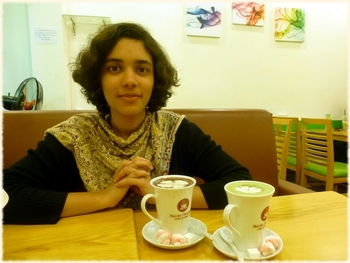

Senior Lecturer, ARC DECRA Fellow, and Tuckwell Fellow
Mathematical Sciences Institute
The Australian National University
Canberra, ACT, 2601, Australia
Email: asilata.bapat at anu dot edu dot au
Office: 4.84 Hanna Neumann Building #145
Phone: +61 2 6125 7320
Research interests and background
I am interested in the topology, geometry, and combinatorics of spaces and categories that arise from representation theory. I am currently thinking about Bridgeland stability conditions on triangulated categories and categorical braid group actions. Other topics of interest include perverse sheaves, hyperplane arrangements, and Bernstein–Sato polynomials. More broadly, I enjoy mathematical topics that are rooted in explicit examples.
Before coming to ANU, I was a postdoctoral researcher at the University of Georgia, supervised by William Graham. I got my PhD from the University of Chicago, supervised by Victor Ginzburg. I have an undergraduate degree in Mathematics with Computer Science from the Massachusetts Institute of Technology.
My papers and preprints are on my research page. A CV is available here (html) and here (pdf).
Current and upcoming activities
My professional activities include doing research and presenting research work, teaching classes, supervising students, and mentoring Tuckwell scholars. Selected current and upcoming activities are listed below. Archives are available under activities.
Semester 2, 2026
- Posted a preprint titled "On the language of palindromic reduced words in a Coxeter group", available as a pdf and also on the arXiv.
- Supervising Tanisha Talekar's PhD project.
- Supervising Akihiro Katsuta's Honours project.
- Participating in a working seminar on Bridgeland stability and K3 surfaces.
- Coordinating the Simon Marais Mathematics Competition at ANU with Yun Kuen (Marco) Cheung.
Conferences and research travel
- Feb 2027: FACETS conference, Sydney Mathematical Research Institute (co-organised with Edmund Heng, Anne Thomas, Oded Yacobi)